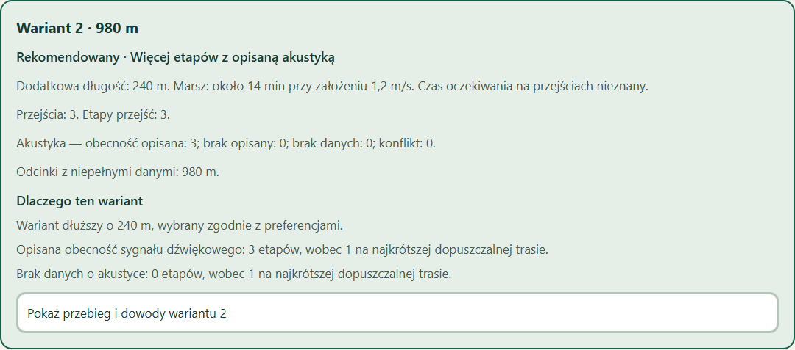

Informacje o trasie.
Z miejscem na niewiadome.
Osoba niewidoma potrzebuje informacji o infrastrukturze i o jakości dostępnych danych.
Przejścia, opisane udogodnienia, zapisane schody.
Źródło, obserwacja i potwierdzenie — oddzielnie.
Braki danych i sprzeczności widoczne wprost.
Start i cel z katalogu.
Preferencje i twarde ograniczenia.
Długość, dane i uzasadnienie.
Tekst, dowody i odsłuch na żądanie.
Rekomendowany wariant ma opisaną akustykę na 3 etapach przejść.
Bez preferencji akustyki rekomendacja zmienia się na 740 m.
Trzy opcje: 740 / 980 / 1120 m
Zrzut działającej aplikacji. Dane nie opisują realnych miejsc.
Źródło podaje obecność cechy.
Źródło podaje brak cechy.
Nie potwierdzamy ani obecności, ani braku.
Nie ukrywamy rozbieżności źródeł.
Expo
Tekst i odsłuch
Wspólne schematy
Walidacja danych
Fastify
Kontrolowane błędy
Dijkstra
Ograniczone alternatywy
Obecne demo liczy trasy w pamięci. Import OSM i graf realnego obszaru to kolejne etapy.
Przeglądarka: klawiatura, dwa rozmiary okna, HTTP i awarie.
Kontrakty, algorytm i brak automatycznego rozluźniania wymagań.
Kolejka mowy i błędy testowane ze sterowanym adapterem.
Dane syntetyczne. Bez prowadzenia terenowego.
Telefon, VoiceOver i TalkBack: nieprzetestowane na urządzeniu.
Miękkie preferencje dotyku i oddzielenia nie zmieniają rankingu tej polityki demo.
Źródła, aktualność i topologia małego obszaru.
Telefon, czytniki i konsultacje z osobami niewidomymi.
Ustalić operatora, opiekuna źródeł i przeglądy jakości.
Informacje o trasie. Z miejscem na niewiadome.